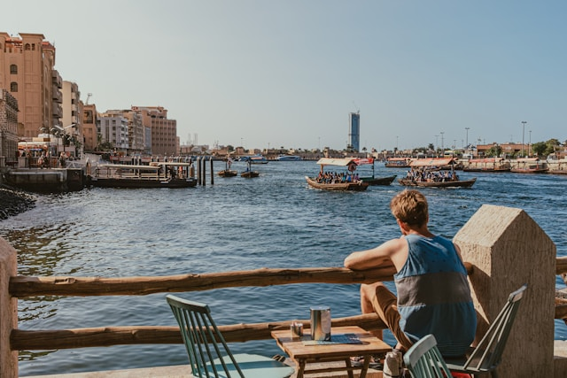
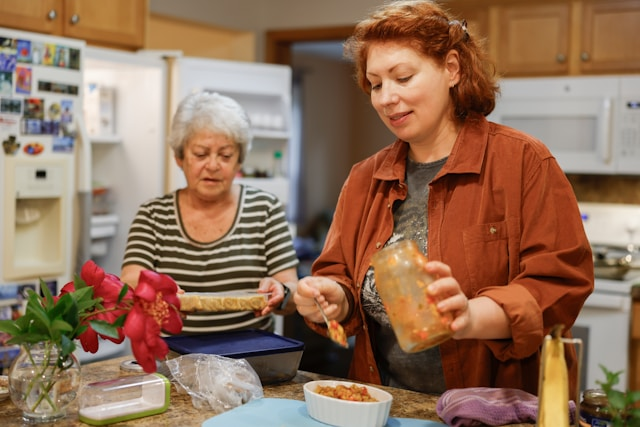
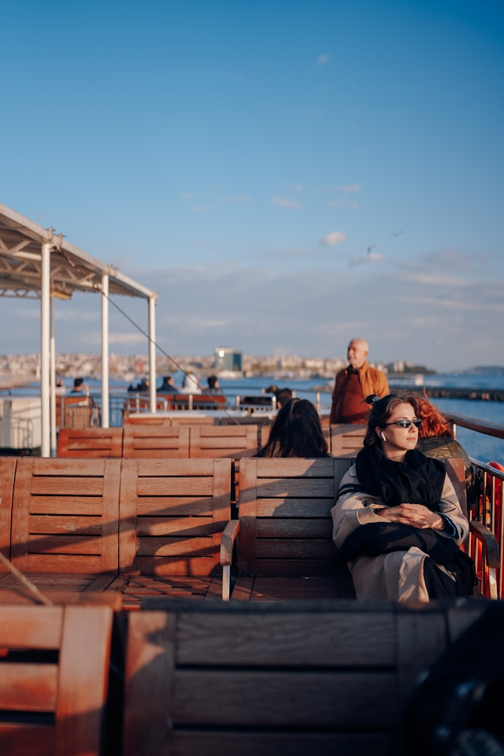
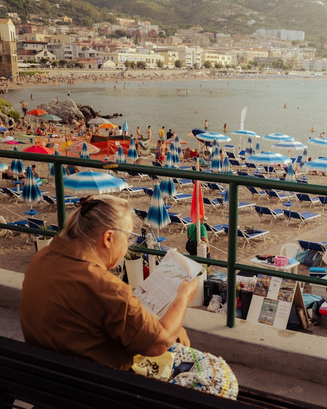
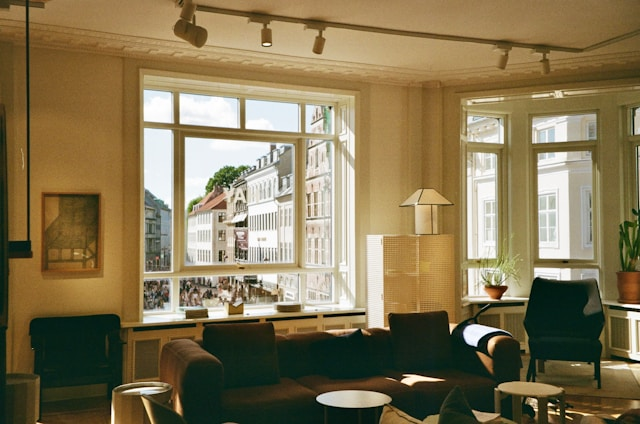

At White Water Rafting Company, we believe adventure builds character, nature heals the soul, and every rapid is a chance to rise. Our mission is to deliver safe, exhilarating, and eco-conscious rafting experiences that leave you breathless—in the best way possible.
History
Nestled in the heart of the Sierra Nevada's wild canyons, Adrenaline Rapids Outfitters was born from a single man's unbreakable bond with the Forked River. Founded in 1998 by Jax Harlan—a former military vet who traded fatigues for paddle gloves—our company started as a beat-up van, a handful of rafts, and a dream to share the river's raw power.

Now in our 28th year, Adrenaline Rapids is a family of 25 guides serving 10,000+ guests annually. From dawn patrols on the Beast to sunset floats under starlit skies, we've hosted CEOs, celebrities, and everyday heroes. Our state-of-the-art outfitter center boasts top gear, pro instruction, and post-trip feasts around crackling fires.
Adventure Awaits You!

Los Dientes del Diablo

Big MallardHalf Day Adventure

Canyon Run

Thunder Falls